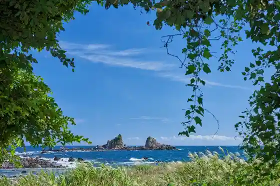
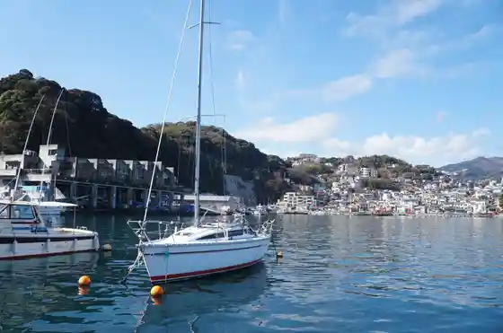
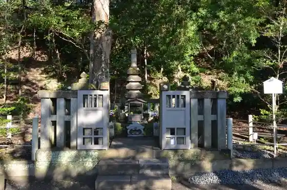
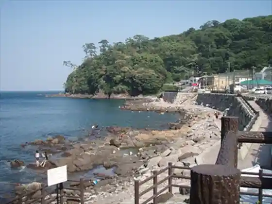

Manazuru Misaki
Manazuru, Kanagawa · 0465-68-1131 · Official / source link

Manazuru Minato
Manazuru, Kanagawa · 0465-68-3827 · Official / source link

Manazuru Nature Hodo (O Hayashi Promenade Shinrin Yoku Promenade Bamba Ura Promenade)
Manazuru, Kanagawa · Official / source link

Kongahama Coast
Manazuru, Kanagawa · Official / source link

O Hayashi Tembo Park
Manazuru, Kanagawa · 0465-68-5501 · Official / source link
Kepu Manazuru
Manazuru, Kanagawa · 0465-68-1112 · Official / source link
Iwa Beach
Manazuru, Kanagawa · Official / source link
Manazuru Ritchu Kawa Kazumasa Art Museum
Manazuru, Kanagawa · 0465-68-1128 · Official / source link
San Tsu Ishi
Manazuru, Kanagawa · 0460-85-9560 · Official / source link
Arai Castle Park
Manazuru, Kanagawa · 0465-68-1131 · Official / source link
Kifune Shrine
Manazuru, Kanagawa · 0465-68-0066 · Official / source link
Orenjifuroraru Farm
Manazuru, Kanagawa · 0465-69-2239 · Official / source link
Shiosai Promenade
Manazuru, Kanagawa · Official / source link
Uoza
Manazuru, Kanagawa · 0465-68-6511 · Official / source link
Tomyo Yama
Manazuru, Kanagawa · Official / source link
Manazuru Ryuen Fuji Kairui Museum
Manazuru, Kanagawa · 0465-68-2111 · Official / source link
Kotori no Ike
Manazuru, Kanagawa · Official / source link